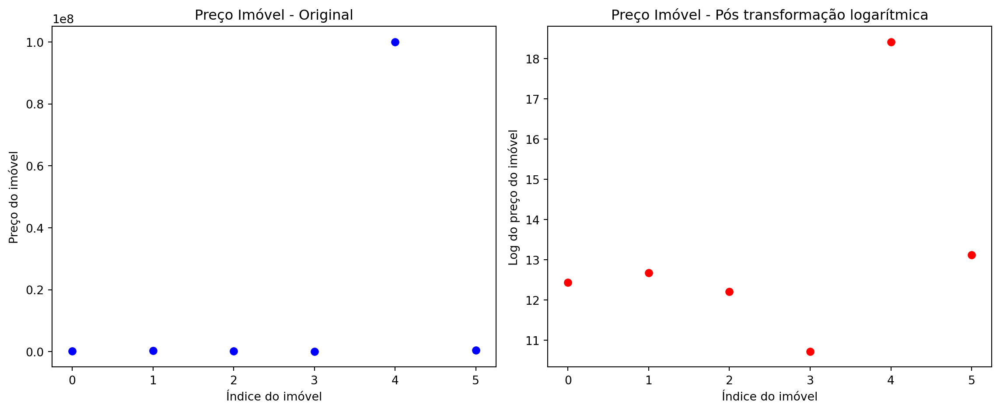

import pandas as pd
import pickle
import numpy as np
import matplotlib.pyplot as plt
from sklearn.feature_selection import mutual_info_classif
from sklearn.model_selection import train_test_split
from sklearn.model_selection import StratifiedKFold
from imblearn.under_sampling import RandomUnderSampler
from sklearn.ensemble import RandomForestClassifier
from sklearn.metrics import confusion_matrix
from sklearn.impute import KNNImputer
from sklearn.linear_model import LogisticRegression
from imblearn.over_sampling import RandomOverSamplerPré-Processamento
Imports
Segue abaixo os módulos que usaremos nesse caderno:
O que é Pré-Processamento?
Pré-processamento é a etapa do desenvolvimento de modelos que consiste em preparar os dados brutos para que eles possam ser utilizados de forma eficiente e correta por algoritmos de aprendizado de máquina ou estatística.
Em termos simples: organizar, limpar e transformar os dados antes de usá-los para treinar um modelo. Essa etapa é crucial porque dados reais quase sempre vêm com problemas: valores faltantes, erros, formatos inconsistentes ou escalas muito diferentes. Se esses problemas não forem tratados, o modelo pode aprender de forma errada ou produzir resultados ruins. Até este caderno, as bases de dados utilizadas são bases que já haviam passado por etapas de pré-processamento. A base spam, por exemplo, antes do pré-processamento teria apenas a íntegra dos e-mails e talvez uma classificação em spam ou não spam.
Pré-processamento tem duas etapas, uma logo depois da divisão dos dados, que será realizada também sempre que o preditor for utilizado, e uma posterior que será para o treinamento apenas.
Os diferentes métodos de pré-processamento podem ser exclusivos entre si, ou seja, se fizer um não pode fazer o outro e vice-versa. Há contextos em que empregar um determinado método em detrimento do outro é importante. Ao longo da apresentação dos diferentes métodos ficará explicito todas essas questões.
Descrição da base
Nesse caderno utilizaremos a base Stroke Prediction Dataset do Kaggle, uma base que contém dados com diferentes tipos de variáveis explicativas, ideal para explorar os diferentes tipos de pré-processamento que apresentaremos.
Segundo a Organização Mundial da Saúde (OMS), o AVC é a segunda principal causa de morte no mundo, sendo responsável por aproximadamente 11% do total de mortes.
Este conjunto de dados é usado para prever a probabilidade de um paciente sofrer um AVC com base em parâmetros de entrada como sexo, idade, diversas doenças e tabagismo. Cada linha dos dados fornece informações relevantes sobre o paciente.
#trocar essa url pelo caminho da base Stroke Prediction Dataset de vocês.
stroke = pd.read_csv("Cadernos Grupo Python\\Pré-Processamento\\healthcare-dataset-stroke-data.csv")
print(stroke) id gender age hypertension heart_disease ever_married \
0 9046 Male 67.0 0 1 Yes
1 51676 Female 61.0 0 0 Yes
2 31112 Male 80.0 0 1 Yes
3 60182 Female 49.0 0 0 Yes
4 1665 Female 79.0 1 0 Yes
... ... ... ... ... ... ...
5105 18234 Female 80.0 1 0 Yes
5106 44873 Female 81.0 0 0 Yes
5107 19723 Female 35.0 0 0 Yes
5108 37544 Male 51.0 0 0 Yes
5109 44679 Female 44.0 0 0 Yes
work_type Residence_type avg_glucose_level bmi smoking_status \
0 Private Urban 228.69 36.6 formerly smoked
1 Self-employed Rural 202.21 NaN never smoked
2 Private Rural 105.92 32.5 never smoked
3 Private Urban 171.23 34.4 smokes
4 Self-employed Rural 174.12 24.0 never smoked
... ... ... ... ... ...
5105 Private Urban 83.75 NaN never smoked
5106 Self-employed Urban 125.20 40.0 never smoked
5107 Self-employed Rural 82.99 30.6 never smoked
5108 Private Rural 166.29 25.6 formerly smoked
5109 Govt_job Urban 85.28 26.2 Unknown
stroke
0 1
1 1
2 1
3 1
4 1
... ...
5105 0
5106 0
5107 0
5108 0
5109 0
[5110 rows x 12 columns]São 5110 amostras com 11 variáveis explicativas e uma variável resposta. Segue abaixo a descrição de cada uma:
id: Número inteiro que serve como identificador único de cada paciente
gender: Male, Female ou Other, é o gênero do paciente.
age: Idade do paciente
hypertension: 0 se o paciente não tem hipertensão e 1 se tiver.
heart_disease: 0 se o paciente não tem alguma doença cardíaca e 1 se tiver.
ever_married: No ou Yes, Não ou Sim se o paciente já foi ou é casado.
work_type: children, Govt_job, Never_worked, Private ou Self-employed, categoria de trabalho do paciente.
residence_type: Rural ou Urban, se o paciente vive no meio rural ou no meio urbano
avg_glucose_level: Nível médio de glicose no sangue, em float.
bmi: Índice de massa corporal (IMC), em float.
smoking_status: formerly smoked, never smoked, smokes ou Unknown, status de fumante do paciente.
stroke: variável resposta, 1 se o paciente teve um AVC 0 se não.
Esta base é a que foi explorada em STROKE: Analysis and Prediction Using Scikit-Learn, Keras, and TensorFlow with Python de Vivian Siahaan, que traz uma análise exploratória profunda da base, além do uso de diferentes técnicas de aprendizado de máquina para classificar os pacientes.
Diretrizes gerais do pré-processamento
Nossa base possui variáveis textuais e categóricas, o que é um problema para as implementações do scikit-learn: os algoritmos de aprendizado de máquina exigem que os dados estejam com algum nível de pré-processamento para poder executar. Precisamos tratar essas condições antes de poder criar o preditor, o tratamento é feito pela codificação para variáveis que serão aceitas pelo scikit-learn. Sem essa etapa a base stroke, caso inserida dentro de uma função de aprendizado de máquina do scikit-learn, apenas retornará um erro.
Dependendo do módulo que for utilizado ou da linguagem de programação, pode haver uma flexibilidade maior, dados que não são aceitos pelo scikit-learn serão aceitos e vice-versa, um programador precisa conhecer as limitações de cada módulo que utiliza.
Em geral o que precisamos nos atentar, em uma primeira análise para o scikit-learn, é a presença dos seguintes tipos de dados:
- Dados textuais
- Dados faltantes
- Variáveis categóricas
- Dados do tipo data
Todas esses tipos de dados necessitam de pré-processamento para rodar em qualquer função do scikit-learn
Idealmente realizaremos o pré-processamento antes da separação em k-fold. Se por alguma razão já temos os dados separados de antemão por reamostragem, será necessário realizar o pré-processamento em cada um dos grupos antes de inserir nos modelos, que pode ser feito com laços for.
O pré-processamento necessariamente precisa ser feito após a separação do conjunto validação para evitar vazamento de informação dos dados novos que usaremos para testar o modelo no final, da mesma maneira que uma amostra externa não poderia influenciar na construção do modelo.
Então como fica o pré-processamento do conjunto validação? Não faremos? Precisamos tratar os dados faltantes e converter variáveis textuais nela também certo?
Sim, precisamos fazer o pré-processamento no conjunto validação também, porém, durante o pré-processamento criaremos médias, desvios padrões entre outras variáveis que não podem ser influenciadas pelos dados externos.
Mas como que o pré-processamento da base validação será feito então?
Depois de criar as métricas no pré-processamento do conjunto treino, utilizaremos estas para realizar a transformação do que for ser transformado no conjunto validação ou dados externos.
Faremos uma separação em treino e teste que utilizaremos na implementação de todos os métodos com reamostragem por k-fold para evitar o viés de seleção do processo de separação dos dados.
Se por alguma razão quisermos alterar o pré-processamento ou qualquer outro aspecto da confecção do preditor devemos refazer a separação treino-teste-validação para não ocorrer o que chamamos de treino do teste: quando ajustamos os pré-processamentos ou a validação cruzada para gerar um resultado “melhor” no conjunto teste.
Será utilizado o algoritmo random-forest para a confecção dos preditores.
Um passo importante antes da separação do conjunto validação é salvar as possíveis classes de todas as variáveis categóricas:
# Identificar as colunas com variável categórica (variáveis categóricas podem aparecer como object)
colunasCategoricas = list(stroke.select_dtypes(include=['object', 'category']).columns)
# Salvando possíveis classes de todas as variáveis categóricas
classesColCateg = []
for coluna in colunasCategoricas:
#Exibindo as diferentes classes presentes em uma coluna com variável categórica
print(f"{coluna}: {list(stroke[coluna].unique())}")
classesColCateg.append(list(stroke[coluna].unique()))gender: ['Male', 'Female', 'Other']
ever_married: ['Yes', 'No']
work_type: ['Private', 'Self-employed', 'Govt_job', 'children', 'Never_worked']
Residence_type: ['Urban', 'Rural']
smoking_status: ['formerly smoked', 'never smoked', 'smokes', 'Unknown']Sem este passo podemos ter problemas com a codificação de variáveis.
Nesse caso, vazamento de informações não é uma preocupação porque o modelo final só poderá aceitar amostras novas com o formato que foi treinado, o que inclui as classes possíveis de uma variável categórica. Portanto, precisamos utilizar todos os dados que possuímos a nossa disposização, mesmo que eventualmente uma das classes só esteje no conjunto validação, o pré-processamento precisa ter ciência de sua existência ao menos para poder criar colunas no processo de codificação de variáveis.
Caso uma classe nova seja adicionada a uma das variáveis e, quisermos manter o modelo anterior, teremos que substituir ela por NA para realizar o tratamento de NA posteriormente. Podemos também simplesmente treinar um novo modelo para aceitar a classe nova, com o pré-processamento adaptado para a novidade.
Segue abaixo a separação do conjunto validação, com 10% das amostras originais.
x_strokeKfold, x_strokeValidacao, y_strokeKfold, y_strokeValidacao = train_test_split(stroke.drop(columns=['stroke']), stroke['stroke'], test_size=0.1, random_state=11)Segue abaixo uma função para testar o preditor com reamostragem por kfold pelas métricas de acurácia, sensibilidade e especificidade (a mesma função do capítulo de reamostragem do caderno de validação cruzada):
def testeMetricasKFold(XBase, YBase, n_splits, random_state, funcaoAlgoritmo):
"""Função para testar acurácia, sensibilidade e especificidade de uma dada base passando por reamostragem por k-fold usando o algoritmo inserido"""
# criação de uma lista para reutilização do generator
kfBase = StratifiedKFold(n_splits=n_splits, shuffle=True, random_state=random_state).split(XBase, YBase)
kfBaseLista = list(kfBase)
# Salvando apenas os índices dos folds em listas [[[treino], [teste]], [[treino], [teste]], ...]
foldsBase = []
for K, (train, test) in enumerate(kfBaseLista, 1):
# Não guarda K porque não precisa, é o índice da lista mais 1.
foldsBase.append([list(train), list(test)])
#print("K:", K, "train:", len(train), "test:", len(test))
# Criando os modelos individuais de cada fold
modelosIndividuais = []
for fold in foldsBase:
modelosIndividuais.append(funcaoAlgoritmo(random_state=random_state).fit(XBase.iloc[fold[0]], YBase.iloc[fold[0]]))
# Testando os modelos individuais de cada fold
acuraciaModelos = []
sensibilidadeModelos = []
especificidadeModelos = []
for i in range(len(modelosIndividuais)):
Y_predBase = modelosIndividuais[i].predict(XBase.iloc[foldsBase[i][1]])
vn, fp, fn, vp = confusion_matrix(YBase.iloc[foldsBase[i][1]], Y_predBase).ravel()
acuracia = (vp + vn) / (vp + vn + fp + fn)
sensibilidade = vp / (vp + fn)
especificidade = vn / (vn + fp)
acuraciaModelos.append(acuracia)
sensibilidadeModelos.append(sensibilidade)
especificidadeModelos.append(especificidade)
# Printando o compilado de métricas
print(f"Média da acurácia: {(sum(acuraciaModelos)/len(acuraciaModelos)*100):.1f}%")
print(f"Desvio padrão populacional da acurácia: {np.std(acuraciaModelos, ddof=0):.3f}\n")
print(f"Média da sensibilidade: {(sum(sensibilidadeModelos)/len(sensibilidadeModelos)*100):.1f}%")
print(f"Desvio padrão populacional da sensibilidade: {np.std(sensibilidadeModelos, ddof=0):.3f}\n")
print(f"Média da especificidade: {(sum(especificidadeModelos)/len(especificidadeModelos)*100):.1f}%")
print(f"Desvio padrão populacional da especificidade: {np.std(especificidadeModelos, ddof=0):.3f}\n")Essa função será utilizada para testar o modelo assim que passarmos pelas etapas iniciais obrigatórias de pré-processamento mencionadas. É uma simples função de validação cruzada.
Seleção de atributos
O primeiro passo do pré-processamento é a seleção de atributos. Reponder a seguinte pergunta: quais variáveis explicativas são minimamente relevantes para o problema?
Digamos que junto dos dados de stroke houvesse um e-mail de contato do paciente, essa informação não será relevante para o treinamento do algoritmo porque o e-mail não é um fator determinístico para diagnóstico de AVC, é uma informação extra. Uma coluna que podemos remover usando essa alusão é o campo id, que é apenas um identificador numérico para o determinado paciente, não guarda informações para o processamento portanto deve ser removido afim de evitar qualquer tipo de correlação expúria com AVC que ele poderá trazer ao modelo.
x_strokeKfold = x_strokeKfold.drop('id', axis=1)Esse processo de remoção da coluna id deverá ser repetido nos dados novos, isto é, tanto no conjunto validação quanto nos dados de uso real.
Mas e quando as colunas que não influenciam no modelo não forem tão óbvias? Existem diversas análises que podem ser feitas durante a etapa de análise exploratória dos dados para determinar isso. O scikit-learn possui uma função chamada mutual_info_classif() que estima a dependência estatística (via informação mútua) entre cada variável explicativa e a variável alvo. Ela exige uma base livre de NAs e com as variáveis categóricas devidamente codificadas. Como isso ainda será ainda realizado não iremos exemplificar seu uso aqui.
Tratamento de dados faltantes
O que são dados faltantes? É uma pergunta fácil de responder a princípio: sempre que um dado está como NA (Not Available) no dataframe ou vazio na base original. Porém esses não são os únicos dados faltantes que precisamos considerar. Muitas vezes dados são faltantes mesmo que em uma primeira análise isso não seja evidente.
O primeiro passo para o tratamento de dados faltantes é a identificação mediante a contagem de dados faltantes e a análise de dados que não são faltantes mas que na prática se comportam como tal. Para isso existe a análise exploratória de dados que por simplicidade não realizamos nesse caderno porque fugiria do escopo
O correto seria realizar esse estudo durante a anális exploratória dos dados, antes da separação do conjunto validação, porém, para manter o escopo do caderno e por simplicidade, isso não foi feito.
Realizamos essa separação no início do caderno também para não abrir a possiblidade de interpretação deste procedimento como uma etapa do tratamento de dados faltantes ou como algo que precisa ser feito depois disso, que estaria incorreto pôs alguns métodos que falaremos aqui exigem essa separação feita de antemão.
Observe a contagem dos valores da coluna smoking_status de stroke:
print(x_strokeKfold["smoking_status"].value_counts())smoking_status
never smoked 1687
Unknown 1383
formerly smoked 795
smokes 734
Name: count, dtype: int641383 dos 4599 são Unknown. Concordam que essa categoria de smoking_status é na realidade um NA?
Observe agora a distribuição de dados da coluna gender de stroke:
print(x_strokeKfold["gender"].value_counts())gender
Female 2689
Male 1909
Other 1
Name: count, dtype: int64É um pouco controverso essa abordagem dado a politização do assunto, mas como se trata de dados para uso médico, uma pessoa de sexo outro precisa ser tratada como NA também porque a orientação de gênero do paciente não é determinante para o diagnóstico de AVC enquanto o sexo natural é.
Na base stroke essas são as únicas colunas que possuem dados faltantes que não são simples NAs. Ao realizar o tratamento de dados faltantes é importante se atentar com esse tipo de valor para todas as variáveis explicativas.
Vamos converter esses valores para NA para que possamos tratá-los como tal a seguir. Para isso usaremos o método .replace de um dataframe do pandas
x_strokeKfold = x_strokeKfold.replace({
"gender": {"Other": pd.NA},
"smoking_status": {"Unknown": pd.NA}
})Quantos NAs temos agora? Para ver isso podemos usar o seguinte método:
print(x_strokeKfold.isna().sum())gender 1
age 0
hypertension 0
heart_disease 0
ever_married 0
work_type 0
Residence_type 0
avg_glucose_level 0
bmi 184
smoking_status 1383
dtype: int64Como convertemos “Other” e “Unknown” como NA precisaremos remover esses valores dos possíveis da variável classesColCateg:
for i in range(len(classesColCateg)):
try:
classesColCateg[i].remove("Other")
except:
pass
try:
classesColCateg[i].remove("Unknown")
except:
passAlém dos NAs imputados temos 184 NAs na variável bmi.
Remoção
O tratamento mais simples de NA é a remoção dos dados. Ele existe sobre duas formas:
Remoção de Amostras
Remoção de uma amostra inteira do conjunto de dados na presença de NAs nas variáveis explicativas.
Pode ser interessante pôs qualquer tipo de tratamento de NA levará a uma perda da consistência dos dados. Porém é importante ressaltar que não podemos simplesmente remover as amostras dos dados de uso. Essa estratégia pode ser executada se garantirmos que em uso real não terão dados faltantes. Nesse caso podemos interpretar a presença dos NAs como um problema pontual dos dados do conjunto de dados usado no treinamento do modelo. Se essa abordagem for utilizada é importante garantir que o conjunto validação não possua dados faltantes também.
No conjunto de dados existe uma amostra que na varíavel gender possui um NA que foi gerado por conta do valor “Other”. Seguindo a lógica que usamos na conversão desse dado em NA, podemos defender a remoção inteira dessa amostra, justamente por ter sido problema pontual na coleta dos dados, a titúlo de tratamento de base, em uma situação real o sexo do paciente é uma informação necessária para o tratamento médico de pacientes com AVC e estará sempre disponível.
Como se trata de apenas uma amostra entre as 4598 essa solução é o suficiente. Se a presença de NAs nessa coluna causada por esta razão fosse mais expressiva alguma outra estratégia seria necessária. Precisamos nesse tratamento remover as amostras com valor “Other” em gender do conjunto validação, que já não possuia nenhum por a caso.
Para remover o NA de gender:
# Como estamos removendo uma linha do dataframe das variáveis explicativas, precisamos fazer o mesmo com a variável resposta, depois de tudo precisamos resetar os índices.
indices_eliminados = x_strokeKfold[x_strokeKfold["gender"].isna()].index
x_strokeKfold = x_strokeKfold.dropna(subset=["gender"])
y_strokeKfold = y_strokeKfold.drop(indices_eliminados)
x_strokeKfold = x_strokeKfold.reset_index(drop=True)
y_strokeKfold = y_strokeKfold.reset_index(drop=True)
# Como retiramos a única amostra Other de gender, precisamos tirar "Other" da lista de categorias de gender.
# para não ser um problema na codificação de variáveis.
# Não precisa fazer se já feito anteriormente.
try:
classesColCateg[colunasCategoricas.index("gender")].remove("Other")
except:
passEsse código funciona para caso hajam mais NAs na coluna também.
Variáveis
Remoção de uma variável explicativa inteira caso esta possua NAs em excesso.
Não queremos criar um preditor que dependa de dados com NAs em excesso. Qualquer tratamento de NA resultará em uma amostra que trará inconsistência ao modelo.
No conjunto stroke, smoking_status possui 1/3 dos dados como dados faltantes. Podemos argumentar pela remoção dessa coluna, porém essa decisão vem com um custo analítico alto: tabagismo é uma prática que leva a diversos problemas de saúde entre eles o AVC.
Remoção de amostras não será uma boa abordagem devido a magnetude da falta de desses dados, além disso, em um contexto real de uso é possível que não seja conhecido o status de fumante do paciente.
Uma abordagem que podemos seguir é de criar dois modelos: um preditor de AVC que leva em conta o status de fumante do paciente para ser usado quando a informação está presente e outro que ignora a variável (mediante a exclusão da coluna dos dados) para ser usado quando o dado for faltante.
Para o uso do modelo criaremos uma função que identifica a presença ou não de valor significativo em smoking_status usando um simples if para alternar entre os modelos. Uma nova separação de treino e validação teria que ser feita nesse caso, uma para ser usada no preditor com o status de fumante do paciente e outro para ser usado no preditor sem que possuam os dados que repliquem essa distinção.
Após a predição, a função que cria a alternância receberá os dados, os consolidará e retornará os valores.
Por simplicidade não faremos esse procedimento aqui no caderno, mas é uma abordagem interessante de se avaliar.
Imputação
A ideia central é substituir os NAs por outros valores que façam algum sentido no contexto dos dados com o objetivo de manter a amostra e ter a menor perda de capacidade analítica possível. Segue alguns métodos:
Valores padrões
Substituição dos dados faltantes por valores padrões podem ser feitas usando a média, mediana, moda dos demais dados do conjunto treino ou ainda por um valor padrão pré-definido arbitrariamente.
Essa estratégia é particularmente útil quando o dado a ser analisado carrega alguma importância porém não é um fator determinante por si só na predição do modelo.
Ao realizar esse procedimento estamos reduzindo a relevância da variável específica na análise daquela amostra. Um pensamento que sumariza essa decisão é: “Seria importante que tívessemos, mas como não temos não tem problema.”.
Quando usar usar a moda, mediana, a média ou um valor arbitrário?
Para as variáveis categóricas temos a moda ou um valor arbitrário como possibilidade. Usaremos a moda quando não tivermos uma boa razão pra por um dado arbitrário. Um especilista pode ser consultado para determinar um valor arbitrário a usar.
Para variáveis contínuas podemos usar qualquer um, embora a moda não faça tanto sentido. Determinar entre usar a mediana e a média depende de uma análise da dispersão dos dados. Se entendermos que o conjunto de dados possuam amostras com valores muito destoantes, isso é, muitos outliers, não devemos usar a média. Definir um valor arbitrário a ser utilizado exige um entendimento profundo do dado e do assunto, que se for o caso sempre será uma boa opção.
Importante é que se for optado por usar qualquer valor padrão a decisão precisa ser tomada independente do conjunto validação ou de dados novos do uso real: precisamos determinar o valor a ser usado a priori e salvá-lo no pré-processamento, sem haver redefinição dele por uso de um diferente conjunto de dados. Isso é feito para evitar vazamento de dados no caso do uso do conjunto validação e para evitar que o tratamento de NAs dos dados novos seja feito com base neles apenas, que poderia gerar um péssimo resultado.
Usaremos a mediana para os dados faltantes do bmi e a moda para o smoking_status para definir valores padrões para as respectivas variáveis independentes a partir dos dados do conjunto treino.
print(x_strokeKfold['bmi'].median())
print(x_strokeKfold['smoking_status'].mode())28.1
0 never smoked
Name: smoking_status, dtype: objectA mediana do bmi é 28.1 e a moda do smoking_status é never smoked. Utilizaremos KNN Impute, que será apresentado em breve, para tratar os NAs de bmi, enquanto, para smoking_status, a estratégia de valor padrão. Para realizar a substituição de dados faltantes faremos do seguinte modo:
x_strokeKfold = x_strokeKfold.replace({
"smoking_status": {pd.NA: "never smoked"} #,
#"bmi": {pd.NA: 28.1}
})Observe que os valores foram definidos manualmente, sem passar as funções novamente. Devemos comentar o código que usamos para calcular e imprimir na tela a mediana e a moda, podemos até removê-lo, só não podemos deixá-lo executando na função final de pré-processamento.
Imputação por propagação
Esse tratamento de NA consiste em preencher o valor com o seguinte ou o anterior do conjunto de dados. Isso é feito quando existe uma lógica de continuidade nas amostras do dado como em séries temporais. Não será utilizado na base stroke mas é importante ser citado.
Dependendo do contexto podemos usar o seguinte ou o anterior. Digamos que tiramos medições a cada 10 minutos do clima de uma cidade. Em um dos momentos faltou energia justamente durante a medição e o dado não foi coletado. Faz sentido usar tanto o dado anterior quanto o seguinte. Podemos ainda tirar uma média entre os dois para que em um contexto de piora do tempo não haja uma mudança muito abrupta justamente na medição da piora.
Já em um contexto de financeiro, digamos que queremos saber quanto foi o lucro de uma ação em um período porém não temos o dado do primeiro momento que foi perdido por uma razão qualquer. Para ser mais correto na análise, usando a base mais justa para cálculo, usaremos o último dado disponível.
O pandas possui o método de dataframes .fillna() que possui os parâmetros method e limit:
method: recebe qual método de imputação por propagação desejamos usar, “ffill” para buscar o dado anterior da medição faltante e “bfill” para buscar o dado seguinte da medição faltante.limit: define quantos valores consecutivos podem ser preenchidos usando a estratégia escolhida.
Por aprendizado de máquina
Podemos fazer o tratamento de NAs via imputação por aprendizado de máquina. A ideia central dessa estratégia é rodar um preditor para a variável explicativa faltante baseado nas demais variáveis explicativas.
Podemos criar modelos de aprendizado de máquinas para prever as variáveis faltantes usando as próprias variáveis explicativas dos dados e usá-los para realizar o tratamento de NAs.
Apresentaremos o KNN Imputation, um modelo de aprendizado de máquina baseado no KNN, porém existem diversos outros algoritmos baseados nessa estratégia que não serão abordados nesse curso.
KNN Imputation
O KNN Imputation é um método que, baseado nos vizinhos mais próximos, determina valores para a variável explicativa com dados faltantes do conjunto de dados.
O algoritmo é excelente para situações com poucos NAs na base de dados e em que há certa correlação entre as variáveis explicativas. Ele é melhor utilizado para o tratamento de dados faltantes em variáveis contínuas já que é um regressor.
Essa restrição de qualidade para o número de NAs é global para todas as variáveis do conjunto de dados: se houver NAs em demasiado em diversas colunas o substituto será pior, especialmente se a presença de NAs for alta na variável explicativa que quisermos substituir por esse método. Portanto, ele deverá ser o último método de tratamento de NA a ser utilizado ao optarmos por utilizá-lo. Em relação a correlação entre as variáveis explicativas, se não houver, o KNN Imputation será incapaz de predizer bons substitutos aos dados faltantes.
Como utilizaremos o KNN Imputation no conjunto de dados stroke? A variável explicativa smoking_status possui muitos NAs, cerca de 1/3 de todas as amostras, então seu tratamento por KNN Imputation não seria uma boa abordagem. Já para a variável explicativa bmi, apenas cerca de 5% da base são NAs e, mediante a uma análise de correlação e causalidade, podemos observar que há dependencia entre variáveis explicativas com a variável bmi, logo, o KNN Imputation será capaz de produzir bons substitutos para essa variável, possivelmente melhor que um simples valor padrão.
Outra característica do KNN Imputation é que a análise é feita baseada em vizinhos, então uma base de dados ordenada por uma ou outra métrica será capaz de trazer melhores substitutos.
Como o KNN Imputation realiza a substituição baseada em semelhanças entre amostras vizinhas por isso ele só poderá ser utilizado para os dados de treino uma vez que não há como garantir que em uso real os dados inseridos serão o suficiente para realizar o tratamento de NA com o uso do algoritmo. Para os dados de uso real ou teste outras estratégias terão que ser utilizadas. Para a base stroke será utilizado KNN Imputation para tratar os dados faltantes de bmi, porém para novos dados o valor padrão 28.1 para bmi será utilizado.
A implementação do KNN Imputation do scikit-learn exige as variáveis já codificadas para funcionar: não serão aceitos dados categóricos. É necessário também fazer transformação de variáveis contínuas, seja por padronização, normalização ou outro método devido a alta sensíbilidade a diferenças nas escalas entre as variáveis explicativas do método. Esses pontos serão discutidos em próximos tópicos do caderno.
Apresentaremos o código para a substituição por KNN Imputation aqui, porém só será de fato utilizado na base depois que fizermos a codificação e transformação das variáveis, na conclusão do pré-processamento.
# Comentado para usar depois das transformações e codificações de variáveis
#x_strokeKfold['bmi'] = KNNImputer(n_neighbors=10).fit_transform(x_strokeKfold)[:, x_strokeKfold.columns.get_loc('bmi')]Observe que o KNNImputer recebe o argumento n_neighbors: precisamos especificar com quantos vizinhos o algoritmo usará, quanto mais vizinhos mais pesado será o processamento e mais dados serão considerados para a imputação.
Depois de rodar o KNNImputer o código tem a seguinte indexação: [:, x_strokeKfold.columns.get_loc('bmi')] isso foi realizado para salvar em x_strokeKfold apenas o resultao do KNNImputer de bmi. O resultado da função é uma lista de listas numpy com todos os valores NAs preenchidos, ao realizar essa indexação estaremos salvando apenas os valores da coluna bmi. Com excessão do bmi, os dados faltantes de todas as variáveis do conjunto stroke já foram tratadas então não havia necessidade colocar essa restrição, porém, se realizarmos algum outro tratamento de NAs posterior ao KNNImputer, precisaremos especificar a coluna como feito no código de exemplo para que dados faltantes possam ser tratados diferentemente como for desejado.
Codificação de variáveis
Codificação de variáveis (ou encoding) é o processo de transformar variáveis categóricas ou textuais em valores numéricos, para que possam ser utilizadas por algoritmos de aprendizado de máquina que funcionem melhor com números. Existem diversas técnicas de codificação de variáveis. Segue abaixo uma lista:
Ordinal Encoding: Cada categoria de uma variável explicativa textual recebe um valor inteiro. Ideal quando existe uma ordem natural entre as classes. Exemplo: “Frio” -> 0 ; “Morno” -> 1; “Quente” -> 2.
One-Hot Encoding: Cada categoria de uma variável explicativa é substituida uma nova variável explicativa com valor binário. Será abordada com mais detalhe em breve.
Dummy Variables: One-Hot Encoding porém com uma coluna a menos deixando uma das categorias representada implicitamente. Será abordada com mais detalhe em breve.
Frequency Encoding: Cada categoria de uma variável explicativa categórica é substituída pela sua frequência de aparição.
Mean Encoding: Substitui as categorias de uma variável explicativa textual pela média das respectivas. Exemplo: Análise de crédito de uma cidade por zonas: Centro, Sul, Norte. A média da inadimplencia é respectivamente 20%, 40% e 70%. A partir dessas médias as categorias são substituídas e o modelo enxergará apenas a taxa de inadimplência da região.
A seguir Dummy Variables e One-Hot encoding com mais detalhes e aplicados na base stroke.
One-Hot encoding e Dummy Variables
One-Hot encoding e Dummy Variables codificam uma variável explicativa categórica em uma série de colunas binárias, uma para cada categoria (menos um no caso de Dummy Variables). A ideia central é que o algoritmo de aprendizado de máquina enxergará a presença ou não do dado qualitativos expresso na variável categórica. Ao substituir por números eles iriam interpretar os dados como gradativos quando as vezes não possuem essa natureza.
No exemplo dado no Ordinal Encoding, “Frio”, “Morno”, “Quente” possui uma relação de ordem entre as categorias então podemos expressá-los em uma coluna só com números. Porém, muitas variáveis qualitativas não possuem essa relação.
Observe os valores possíveis de work_type de stroke: children, Govt_job, Never_worked, Private e Self-employed; como poderiámos ordená-los logicamente por números? children 0, Never_worked 1, Private 2, Self-employed 3, Govt_job 4? Porque Govt_job é 4 e não 2? Não há ordem lógica alguma no contexto de stroke e o mesmo valerá para gender, ever_married, residence_type, smoking_status. Ao todo 5 das 11 variáveis explicativas não possuem ordem lógica: imagina a qualidade do modelo se simplesmente transformássemos em números por Ordinal Encoding?
Segue abaixo como a codificação de work_type é feita por One-Hot encoding e como é feita por Dummy Variables:
- Represetação original de work_type:
| work_type |
|---|
| children |
| children |
| Govt_job |
| children |
| Never_worked |
| Private |
| Govt_job |
- Codificação por One-Hot encoding:
| children | Never_worked | Private | Self_employed | Govt_job |
|---|---|---|---|---|
| 1 | 0 | 0 | 0 | 0 |
| 1 | 0 | 0 | 0 | 0 |
| 0 | 0 | 0 | 0 | 1 |
| 1 | 0 | 0 | 0 | 0 |
| 0 | 1 | 0 | 0 | 0 |
| 0 | 0 | 1 | 0 | 0 |
| 0 | 0 | 0 | 0 | 1 |
- Codificação por Dummy Variables:
| Never_worked | Private | Self_employed | Govt_job |
|---|---|---|---|
| 0 | 0 | 0 | 0 |
| 0 | 0 | 0 | 0 |
| 0 | 0 | 0 | 1 |
| 0 | 0 | 0 | 0 |
| 1 | 0 | 0 | 0 |
| 0 | 1 | 0 | 0 |
| 0 | 0 | 0 | 1 |
A diferença entre One-Hot encoding e Dummy Variables fica bem explícita quando observamos a codificação de work_type: quando for children nenhum ficará marcado, estará implícito que é children.
Observe que a ordem das categorias que os dados estão organizados e as categorias presentes não influenciam na criação das colunas. Self_employed é sempre zero porque em nenhum das 7 amostras ele aparece mas a coluna está lá do mesmo jeito. Isso ocorre porque as colunas serão criadas pela variável classesColCateg que definimos no início do caderno que contém todas as possíveis categorias de cada uma das variáveis explicativas.
Quando usar One-Hot encoding ou Dummy Variables?
A codificação por One-Hot encoding é ideal para modelos que não sofrem com multicolinearidade, como algoritmos baseados em árvores de decisão, essa codificação permite que cada categoria seja explorada livremente pelo modelo. Para modelos lineares como regressão logística a colinearidade perfeita do one-hot encoding está associada a redução de acurácia. Ao reduzir uma variável o problema da colinearidade será atenuado e portanto Dummy Variables é a melhor escolha.
Como utilizaremos o RandomForest, um modelo baseado em árvores, seguiremos com codificação por One-Hot encoding.
Para codificar as variáveis explicativas utilizaremos as variáveis classesColCateg e colunasCategoricas que foi criada no início do pré-processamento. Elas possuem a relação de colunas categóricas e seus possíveis valores.
O scikit-learn possui uma função que cria as colunas a partir de one-hot encoding, porém ela só funcionária se os dados que forem inseridos sempre tiverem todos os valores possíveis, o que não é possível de garantir, portanto é aconselhável criar as colunas manualmente pelo pandas a partir da variável que mapeia os valores possíveis criada anteriormente.
Essas variáveis que criamos precisam estar salvas no código, não podemos fazer essa coleta sempre pelo mesmo problema da função pronta do scikit-learn. Segue abaixo os valores das variáveis salvas anteriormente:
print(colunasCategoricas)
print(classesColCateg)['gender', 'ever_married', 'work_type', 'Residence_type', 'smoking_status']
[['Male', 'Female'], ['Yes', 'No'], ['Private', 'Self-employed', 'Govt_job', 'children', 'Never_worked'], ['Urban', 'Rural'], ['formerly smoked', 'never smoked', 'smokes']]Para deixá-las salvas no código é simplesmente iniciá-las já com os valores salvos da análise que fizemos. Esse é o código que precisa estar no arquivo de pré-processamento, que será o mesmo para o treinamento e para realizar o pré-processamento de dados novos posteriormente:
colunasCategoricas = ['gender', 'ever_married', 'work_type', 'Residence_type', 'smoking_status']
classesColCateg = [['Male', 'Female'], ['Yes', 'No'], ['Private', 'Self-employed', 'Govt_job', 'children', 'Never_worked'], ['Urban', 'Rural'], ['formerly smoked', 'never smoked', 'smokes', 'Unknown']]Agora para criar as colunas novas basta adicioná-las uma a uma no dataframe:
# Para cada coluna
for i in range(len(colunasCategoricas)):
# Para cada classe de cada coluna
for j in range(len(classesColCateg[i])):
#Se for Dummy Variables descomente o seguinte if e continue:
#if j == 0:
#continue
x_strokeKfold[colunasCategoricas[i]+"_"+classesColCateg[i][j]] = (x_strokeKfold[colunasCategoricas[i]] == classesColCateg[i][j]).astype(int)
print(x_strokeKfold[colunasCategoricas[i]+"_"+classesColCateg[i][j]])0 1
1 1
2 0
3 1
4 0
..
4593 1
4594 1
4595 0
4596 0
4597 1
Name: gender_Male, Length: 4598, dtype: int64
0 0
1 0
2 1
3 0
4 1
..
4593 0
4594 0
4595 1
4596 1
4597 0
Name: gender_Female, Length: 4598, dtype: int64
0 1
1 1
2 1
3 1
4 0
..
4593 1
4594 1
4595 1
4596 1
4597 1
Name: ever_married_Yes, Length: 4598, dtype: int64
0 0
1 0
2 0
3 0
4 1
..
4593 0
4594 0
4595 0
4596 0
4597 0
Name: ever_married_No, Length: 4598, dtype: int64
0 1
1 0
2 0
3 0
4 1
..
4593 0
4594 1
4595 1
4596 1
4597 1
Name: work_type_Private, Length: 4598, dtype: int64
0 0
1 1
2 1
3 0
4 0
..
4593 1
4594 0
4595 0
4596 0
4597 0
Name: work_type_Self-employed, Length: 4598, dtype: int64
0 0
1 0
2 0
3 1
4 0
..
4593 0
4594 0
4595 0
4596 0
4597 0
Name: work_type_Govt_job, Length: 4598, dtype: int64
0 0
1 0
2 0
3 0
4 0
..
4593 0
4594 0
4595 0
4596 0
4597 0
Name: work_type_children, Length: 4598, dtype: int64
0 0
1 0
2 0
3 0
4 0
..
4593 0
4594 0
4595 0
4596 0
4597 0
Name: work_type_Never_worked, Length: 4598, dtype: int64
0 1
1 1
2 1
3 1
4 0
..
4593 1
4594 0
4595 1
4596 1
4597 1
Name: Residence_type_Urban, Length: 4598, dtype: int64
0 0
1 0
2 0
3 0
4 1
..
4593 0
4594 1
4595 0
4596 0
4597 0
Name: Residence_type_Rural, Length: 4598, dtype: int64
0 1
1 0
2 0
3 0
4 0
..
4593 0
4594 0
4595 1
4596 0
4597 0
Name: smoking_status_formerly smoked, Length: 4598, dtype: int64
0 0
1 0
2 0
3 1
4 1
..
4593 0
4594 0
4595 0
4596 1
4597 1
Name: smoking_status_never smoked, Length: 4598, dtype: int64
0 0
1 1
2 1
3 0
4 0
..
4593 1
4594 1
4595 0
4596 0
4597 0
Name: smoking_status_smokes, Length: 4598, dtype: int64
0 0
1 0
2 0
3 0
4 0
..
4593 0
4594 0
4595 0
4596 0
4597 0
Name: smoking_status_Unknown, Length: 4598, dtype: int64Precisamos agora deletar as colunas originais:
for coluna in colunasCategoricas:
x_strokeKfold = x_strokeKfold.drop(coluna, axis=1)Transformação de variáveis
No contexto de ciência de dados e machine learning, transformação de variáveis é o processo de modificar ou converter os dados originais para que fiquem em um formato ou escala mais adequada para análise ou para um modelo de aprendizado. O objetivo principal é melhorar a performance do modelo e facilitar a interpretação dos dados.
A maioria dos algoritmos de machine learning não se sai bem quando os números que representam os dados estão em escalas muito diferentes. Por exemplo, nos dados de stroke, o bmi (IMC) varia de 10.3 a 97.6 enquanto o avg_glucose_level (nível de glicose médio) varia de 55.12 a 271.74. Uma análise semelhante pode ser feita com age, que ocila de 0 a 82 anos. Se não fizermos nenhuma transformação, o modelo vai acabar dando mais atenção do que deveria ao avg_glucose_level em comparação com as outras variáveis numéricas. Isso é ainda mais grave quando pensamos nas variáveis booleanas que geramos a partir do One-Hot encoding anteriormente que sempre serão 0s ou 1s e por essa lógica seriam completamente ignoradas.
Para resolver isso, existem técnicas que colocam todos os atributos na mesma escala. As duas mais comuns são a normalização e a padronização. Escolher entre elas depende de um entendimento profundo do funcionamento do algoritmo de aprendizado de máquina a ser utilizado.
Tratamento de outliers
Antes detalhar as transformações precisamos falar sobre tratamento de outliers. Digamos que por um erro de digitação a idade de um paciente foi registrada como 600 invés de 60. Se nada for feito ao realizar o pré-processamento do conjunto de treino as referências para normalização e padronização gerará resultados muito concentrados próximos ao zero e o outlier irá se destacar muito frente aos demais podendo criando outro problema de escala para o modelo que quando inserido dados novos livres de outliers a variável poderá ser ignorada na avaliação.
Para solucionar isso temos dois tratamentos possíveis:
- Remoção de outliers
Na etapa de análise da base, ao identificarmos outliers gerados por possível falha de registro dos dados podemos remover o dado. Essa abordagem é interessante se conseguirmos garantir que os dados novos virão corretos e que o outlier é um caso isolado.
- Transformação logarítmica
Se identificarmos que a base possui outliers que não são simples erros de registro do dado podemos recorrer a transformação logarítmica. Na base Stroke Prediction Dataset do Kaggle não temos nem um caso como esse mas vamos pensar em outro caso hipotético:
Estamos trabalhando com uma base do mercado imobiliário para venda de imóveis. Na região os imóveis ocilam de preço entre 200 mil e 500 mil reais. Porém, um palácio na mesma região foi vendido por 100 milhões de reais. Conseguem enxergar o problema? Não foi um erro de digitação e sim uma possibilidade real do mundo real.
O ser humano que mais viveu na história foi a francesa Jeanne Calment que viveu até os 122 anos: a ciência vem progredindo ao longo dos anos para aumentar a expectativa de vida do ser humano mas quando será que a ciência permitirá que seres humanos voltem a viver como Matusalém, que de acordo com a Bíblia viveu até os 969 anos? O corpo humano não é capaz de sustentar pessoas com IMC e nível de glicose no sangue muito superiores aos máximos do nosso conjunto de dados também.
Sempre que os valores de uma variável explicativa puder variar em ordem de grandeza a transformação logarítmica deve ser considerada. Ela nada mais é que substituir o valor pelo seu log, que comumente é utilizado na base e:
# Dados
precoImoveis = [250000, 320000, 200000, 45000, 100000000, 500000]
tipoImoveis = ['apartamento', 'casa', 'casa', 'apartamento', 'palacio', 'casa']
dadosImoveis = pd.DataFrame({'tipoImovel': tipoImoveis, 'precoImovel': precoImoveis})
# Transformação logarítmica
dadosImoveis['precoImovel_log'] = np.log(dadosImoveis['precoImovel'])
# Scatter plot
plt.figure(figsize=(12,5))
# Scatter original
plt.subplot(1,2,1)
plt.scatter(dadosImoveis.index, dadosImoveis['precoImovel'], color='blue')
plt.title('Preço Imóvel - Original')
plt.xlabel('Índice do imóvel')
plt.ylabel('Preço do imóvel')
# Scatter logarítmico
plt.subplot(1,2,2)
plt.scatter(dadosImoveis.index, dadosImoveis['precoImovel_log'], color='red')
plt.title('Preço Imóvel - Pós transformação logarítmica')
plt.xlabel('Índice do imóvel')
plt.ylabel('Log do preço do imóvel')
plt.tight_layout()
plt.show()
Observe que para os dados originais, no gráfico, para quase todos os imóveis o preço aparece próximo a zero e o palácio está no topo do gráfico destoando dos demais, enquanto no gráfico em que houve transformação logarítmica o palácio continua claramente acima dos demais porém a diferença dos demais com eles mesmos é mais visível. Para os algorítmos de aprendizado de máquina essa diferença de escala no primeiro é igualmente notável e impactante para o ajuste do modelo.
Após essa transformação inicial a normalização ou a padronização podem ser feitas na sequência como for desejado. Se realizada no conjunto de treino, a transformação logarítimica precisa também ser realizada para dados novos, seja o conjunto de validação/teste ou dados de uso real.
Normalização
A normalização Min-Max (muitas vezes chamada simplesmente de normalização) é um método bem simples de ajustar dados. A ideia é pegar cada coluna de dados (variável explicativa) e transformá-lo de modo que seus valores fiquem dentro de um intervalo definido, normalmente de 0 a 1.
O processo funciona assim:
Obtem-se o valor de cada dado.
Subtrai o valor mínimo da coluna.
Divide pelo intervalo total (valor máximo da coluna – valor mínimo da coluna).
Com isso, o menor valor vira 0 e o maior valor vira 1, e todos os outros ficam proporcionalmente entre eles.
No Scikit-Learn, existe a função MinMaxScaler() que faz isso automaticamente, porém, a função pronta não nos fornece os valores de mínimo e máximo que serão utilizados nos dados novos. Por isso faremos isso sempre de forma manual para salvarmos essas referências. Uma vez definido o mínimo e o máximo da coluna pelo conjunto treino, os mesmos valores terão que ser utilizados para qualquer normalização feita no futuro.
Segue abaixo a normalização das variáveis explicativas contínuas da base stroke (age, bmi, avg_glucose_level):
# Definição dos mínimos e máximos a serem utilizados
print("Mínimo age:", x_strokeKfold['age'].min())
print("Máximo age:", x_strokeKfold['age'].max())
print("Mínimo avg_glucose_level:", x_strokeKfold['avg_glucose_level'].min())
print("Máximo avg_glucose_level:", x_strokeKfold['avg_glucose_level'].max())
print("Mínimo bmi:", x_strokeKfold['bmi'].min())
print("Máximo bmi:", x_strokeKfold['bmi'].max())Mínimo age: 0.08
Máximo age: 82.0
Mínimo avg_glucose_level: 55.12
Máximo avg_glucose_level: 271.74
Mínimo bmi: 10.3
Máximo bmi: 97.6A partir desses valores de mínimo e máximo para as variáveis explicativas contínuas faremos todas as normalizações daqui para frente:
x_strokeKfold['age'] = (x_strokeKfold['age'] - 0.08)/(82.0-0.08)
x_strokeKfold['avg_glucose_level'] = (x_strokeKfold['avg_glucose_level'] - 55.12)/(271.74-55.12)
x_strokeKfold['bmi'] = (x_strokeKfold['bmi'] - 10.3)/(97.6-10.3)Para floresta aleatória, o algoritmo de aprendizado de máquinas que será utilizado para esse problema tanto faz se é feito normalização ou padronização. Por simplicidade, seguiremos com a normalização para a base.
Padronização
A padronização, diferente da normalização, não gera um resultado em um intervalo específico, porém os resultados tem média 0 e desvio padrão 1.
Isso se da pelo seu funcionamento:
Obtem-se o valor de cada dado.
Subtrai-se a média de cada valor, fazendo com que os dados fiquem centrados em torno de zero
Divide-se o resultado pelo desvio padrão, de modo que os valores padronizados passem a ter desvio padrão igual a 1.
A padronização é, no geral, considerado melhor que a normalização para lidar com outliers, porém, para variáveis com outliers que variam dos demais dados em ordem de grandeza há a necessidade de um tratamento de outliers assim como o transformação anterior.
Já fizemos a normalização. Essas transformações são mutuamente exclusivas. Porém, para fins didáticos, o código abaixo é como deverá ser feito (comentado quando for feito a redefinição das variáveis)
print("Desvio padrão populacional de age:", np.std(x_strokeKfold['age']))
print("Média de age:", np.mean(x_strokeKfold['age']))
print("Desvio padrão populacional de avg_glucose_level:", np.std(x_strokeKfold['avg_glucose_level']))
print("Média de avg_glucose_level:", np.mean(x_strokeKfold['avg_glucose_level']))
print("Desvio padrão populacional de bmi:", np.std(x_strokeKfold['bmi']))
print("Média de age:", np.mean(x_strokeKfold['bmi']))Desvio padrão populacional de age: 0.2745076710096592
Média de age: 0.5288690182892019
Desvio padrão populacional de avg_glucose_level: 0.20818373232293189
Média de avg_glucose_level: 0.23528482535810868
Desvio padrão populacional de bmi: 0.08981209816205521
Média de age: 0.21331922639150344Semelhante a normalização, esses valores são os que deverão ser utilizados para qualquer padronização futura:
#x_strokeKfold['age'] = (x_strokeKfold['age'] - 43.4)/(22.49)
#x_strokeKfold['avg_glucose_level'] = (x_strokeKfold['avg_glucose_level'] - 106.1)/(45.1)
#x_strokeKfold['bmi'] = (x_strokeKfold['bmi'] - 28.9)/(7.8)Conclusão do pré-processamento
Com todos os pré-processamentos realizados podemos partir para a construção do classificador.
Antes disso temos algumas pendências a resolver: o KNN Imputation de bmi ainda não foi realizado. Ele necessitava dos demais tratamentos realizados para prosseguir, portanto segue abaixo:
x_strokeKfold['bmi'] = KNNImputer(n_neighbors=10).fit_transform(x_strokeKfold)[:, x_strokeKfold.columns.get_loc('bmi')]Observe o resultado do pré-processamento:
pd.set_option("display.max_columns", None)
print(x_strokeKfold) age hypertension heart_disease avg_glucose_level bmi \
0 0.755859 0 0 0.080233 0.139748
1 0.572754 0 0 0.369633 0.294387
2 0.877930 0 1 0.403979 0.258877
3 0.682617 0 0 0.310544 0.229095
4 0.169922 0 0 0.131290 0.261168
... ... ... ... ... ...
4593 0.401855 0 0 0.806943 0.178694
4594 0.560547 1 0 0.085865 0.221191
4595 0.462891 0 0 0.223710 0.234822
4596 0.768066 0 0 0.132121 0.127148
4597 0.401855 0 0 0.201366 0.390607
gender_Male gender_Female ever_married_Yes ever_married_No \
0 1 0 1 0
1 1 0 1 0
2 0 1 1 0
3 1 0 1 0
4 0 1 0 1
... ... ... ... ...
4593 1 0 1 0
4594 1 0 1 0
4595 0 1 1 0
4596 0 1 1 0
4597 1 0 1 0
work_type_Private work_type_Self-employed work_type_Govt_job \
0 1 0 0
1 0 1 0
2 0 1 0
3 0 0 1
4 1 0 0
... ... ... ...
4593 0 1 0
4594 1 0 0
4595 1 0 0
4596 1 0 0
4597 1 0 0
work_type_children work_type_Never_worked Residence_type_Urban \
0 0 0 1
1 0 0 1
2 0 0 1
3 0 0 1
4 0 0 0
... ... ... ...
4593 0 0 1
4594 0 0 0
4595 0 0 1
4596 0 0 1
4597 0 0 1
Residence_type_Rural smoking_status_formerly smoked \
0 0 1
1 0 0
2 0 0
3 0 0
4 1 0
... ... ...
4593 0 0
4594 1 0
4595 0 1
4596 0 0
4597 0 0
smoking_status_never smoked smoking_status_smokes \
0 0 0
1 0 1
2 0 1
3 1 0
4 1 0
... ... ...
4593 0 1
4594 0 1
4595 0 0
4596 1 0
4597 1 0
smoking_status_Unknown
0 0
1 0
2 0
3 0
4 0
... ...
4593 0
4594 0
4595 0
4596 0
4597 0
[4598 rows x 20 columns]Nenhuma coluna possui dados não numéricos, e entre os numéricos, todos estão entre zero e um (quando não apenas zero e um). Esse formato final é o ideal para a maioria dos algoritmos de aprendizado de máquinas. Se os dados contínuos tivessem sido padronizados invés de normalizados seria um pouco diferente desse intervalo porém não faria muita diferença na maioria dos casos.
Rebalanceamento
Rebalanceamento de um conjunto de dados consiste em rebalancear as amostras da variável resposta para atender um objetivo específico. É posterior ao pré-processamento e só pode ser realizada no conjunto de treino.
Esse passo não é necessário para todos os conjuntos de dados, é usado principalmente em conjuntos de dados em que uma das classes da variável resposta é muito mais presente entre as amostras do que a outra.
Como que está o balanceamento de stroke?
print(y_strokeKfold.value_counts())stroke
0 4375
1 223
Name: count, dtype: int645% dos pacientes foram classificados como tendo AVC e 95% como não. Com esses números o modelo que seria treinado iria classificar todos os pacientes como sem AVC porque com a base extremamente desbalanceada como observamos os cálculos feitos para o ajuste interno do algoritmo de aprendizado de máquina convergiriam sempre para a classe majoritária. Não podemos permitir que essa situação ocorra por isso precisamos rebalancear a base. Não precisamos necessariamente ter os dados perfeitamente balanceados: existem situações em que a base estar levemente desbalanceada para uma das classes é benéfico para a qualidade do preditor.
Existem dois principais tipos de rebalanceamento:
Undersampling: Consiste em reduzir a amostragem da classe majoritária para atender a proporção desejada. Com isso perderemos muitos dados que poderiam ser utilizados para o treinamento da base porém utilizaremos apenas dados originais sem transformações associadas ao rebalanceamento.
Oversampling: Consiste em aumentar a amostragem da classe minoritária para atender a proporção desejada. Isso é possível ao transformar dados existentes para expandir a quantidade de dados ou inventar novas amostras a partir de antigas.
Ambos os tipos possuem vantagens e desvantagens, casos de uso melhor ou pior etc. É um assunto bem extenso. No caderno seguiremos apenas com o undersampling.
O undersampling é implementado no python pela classe RandomUnderSampler do pacote imbalanced-learn. Os detalhes sobre rebalanceamento de bases serão abordados no final do caderno.
Como seria o melhor jeito de rebalancear a base stroke? Uma possibilidade é rebalancear para ter 50% dos pacientes com AVC e 50% sem AVC, esse seria o jeito mais intuitivo de seguir. Porém, ao adotar uma estratégia de rebalanceamento precisamos entender o foco do modelo que queremos criar. Qual o foco da predição de AVC? Para uso médico existe uma necessidade que o maior número possível de pacientes com AVC sejam corretamente diagnosticados, em outras palavras, sensibilidade é o foco número 1 desse modelo.
Podemos construir um modelo enviesado para diagnóstico de AVC e isso pode ser feito com uma base desbalanceada possuindo mais pacientes com AVC assim o modelo será treinado tendo em mente que a maioria das pessoas tem AVC resultando numa maior especificidade aos fatores que levam para o diagnóstico porém, não podemos também simplesmente sair classificando todos os pacientes com AVC. Precisamos gerar um modelo com acurácia e especificidade aceitáveis mas que maximize a sensibilidade. Encontrar um ponto de equilíbrio é essencial. Precisamos ainda entender o peso moral da nossa decisão de construção do modelo, afinal ao criar o viés para aumentar os diagnósticos de AVC resultará também em um aumento de diagnósticos incorretos a pacientes saudáveis.
Outro ponto a se atentar é que ao rebalancear para diminuir a proporção da classe majoritária frente a minoritária no undersampling invariavelmente resultará em uma base com menos amostras que poderá gerar um modelo inferior simplesmente por ter sido treinado com menos dados. Podemos rebalancear a base mantendo a classe majoritaria levemente superior em número de amostras para utilizarmos mais dados para treinar o modelo. Isso vem com o custo de enviesarmos o modelo para a classe majoritária
Vamos utilizar a validação cruzada para testar três abordagens: uma com a base perfeitamente balanceada, outra com a base tendendo levemente para diagnóstico de AVC (40% dos pacientes saudáveis e 60% doentes) e outra com um maior número de amostras ao manter um pequeno viés para a classe majoritária (60% dos pacientes saudáveis e 40% doentes) e portanto com um leve viés para diagnóstico negativo de AVC. Faremos validação cruzada para testar os modelos no próximo tópico.
Segue abaixo a criação das bases rebalanceadas:
# Base balanceada
# criando a base balanceada
x_strokeKfoldBalanceado, y_strokeKfoldBalanceado = RandomUnderSampler(sampling_strategy=0.5/0.5, random_state=11).fit_resample(x_strokeKfold, y_strokeKfold)
# print do estado de balanceamento atual
print(y_strokeKfoldBalanceado.value_counts())stroke
0 223
1 223
Name: count, dtype: int64A base balanceada possui exatamente o mesmo número de pacientes com AVC e pacientes saudáveis.
A função RandomUnderSampler possui um parâmetro chamado sampling_strategy ele irá determinar a proporção final das amostras. Ele possui dois tipos possíveis de entrada:
Float no intervalo (0, 1] que dita a proporção da classe minoritária frente a majoritária. Se quisermos uma base balanceada significa que queremos que ambas as classes sejam representadas por 50% das amostras por isso 0.5/0.5 no uso da função. Podemos ainda por esse tipo de entrada deixar a base desbalanceada, ou seja, enviesada, para a classe majoritária com valores menores que 1.0.
Dicionário com a chave sendo as classes da variável resposta e o valor associado a chave sendo o número de amostras desejadas para cada classe na base a ser rebalanceada.
# Base enviesada para AVC
# definindo o número de amostras para sampling_strategy
nAmostrasMinoritaria = y_strokeKfold.value_counts()[1]
# criando a base enviesada para AVC
x_strokeKfoldEnviesadoAVC, y_strokeKfoldEnviesadoAVC = RandomUnderSampler(sampling_strategy={0: int(nAmostrasMinoritaria*0.67), 1: nAmostrasMinoritaria}, random_state=11).fit_resample(x_strokeKfold, y_strokeKfold)
# print do estado de balanceamento atual
print(y_strokeKfoldEnviesadoAVC.value_counts())stroke
1 223
0 149
Name: count, dtype: int64A base enviesada para AVC que criamos possui 223 amostras de pacientes com AVC e 149 pacientes sem AVC.
Para criar a base com viés para a classe minoritária como fizemos precisamos expressar exatamente quantas amostras queremos para cada classe, o sampling_strategy recebe apenas números entre 0 e 1 ou dicionários. Como nesse caso queremos 60% da classe minoritária e 40% da majoritária seria necessário 1.5 no sampling_strategy, como a função não permite isso teremos que usar a entrada por dicionário como feito.
# Base enviesada para sem AVC
# criando a base enviesada para sem AVC
x_strokeKfoldEnviesadoSemAVC, y_strokeKfoldEnviesadoSemAVC = RandomUnderSampler(sampling_strategy=0.4/0.6, random_state=11).fit_resample(x_strokeKfold, y_strokeKfold)
# print do estado de balanceamento atual
print(y_strokeKfoldEnviesadoSemAVC.value_counts())stroke
0 334
1 223
Name: count, dtype: int64A base enviesada para sem AVC que criamos possui 223 amostras de pacientes com AVC e 334 pacientes sem AVC.
Validação cruzada
Construiremos 3 modelos, um para cada balanceamento criado. Ajuste de hiperparâmetro, que normalmente é realizado nessa etapa, aumentaria em muito esse número, porém, não será realizado nesse caderno por simplicidade.
Utilizaremos a função de validação cruzada que foi declarada no início do caderno. Segue abaixo os resultados
#Relembrando o cabeçalho da função:
#testeMetricasKFold(XBase, YBase, n_splits, random_state, funcaoAlgoritmo)
print("Resultados base balanceada:")
testeMetricasKFold(x_strokeKfoldBalanceado, y_strokeKfoldBalanceado, n_splits=10, random_state=11, funcaoAlgoritmo=RandomForestClassifier)
print("\n\nResultados base enviesada para AVC:")
testeMetricasKFold(x_strokeKfoldEnviesadoAVC, y_strokeKfoldEnviesadoAVC, n_splits=10, random_state=11, funcaoAlgoritmo=RandomForestClassifier)
print("\n\nResultados base enviesada para sem AVC:")
testeMetricasKFold(x_strokeKfoldEnviesadoSemAVC, y_strokeKfoldEnviesadoSemAVC, n_splits=10, random_state=11, funcaoAlgoritmo=RandomForestClassifier)Resultados base balanceada:
Média da acurácia: 74.5%
Desvio padrão populacional da acurácia: 0.071
Média da sensibilidade: 78.5%
Desvio padrão populacional da sensibilidade: 0.055
Média da especificidade: 70.4%
Desvio padrão populacional da especificidade: 0.099
Resultados base enviesada para AVC:
Média da acurácia: 79.3%
Desvio padrão populacional da acurácia: 0.072
Média da sensibilidade: 87.5%
Desvio padrão populacional da sensibilidade: 0.072
Média da especificidade: 67.0%
Desvio padrão populacional da especificidade: 0.119
Resultados base enviesada para sem AVC:
Média da acurácia: 76.7%
Desvio padrão populacional da acurácia: 0.041
Média da sensibilidade: 72.6%
Desvio padrão populacional da sensibilidade: 0.068
Média da especificidade: 79.4%
Desvio padrão populacional da especificidade: 0.055
Observe a média da sensibilidade e da especificidade de cada versão da base sobre o RandomForestClassifier.
A acurácia da validação cruzada nesse caso pode ser completamente dispensada uma vez que qualquer base rebalanceada não refletirá a distribuição dos dados reais ou do conjunto validação. Usando a base enviesada para com AVC como exemplo, 67.0% dos 95.0% mais 87.5% dos 5.0% dos dados seriam classificados corretamente e, portanto, uma estimativa de acurácia mais correta seria 68.0%, as bases com mais especificidade teriam uma melhor acurácia nesse caso.
O foco maior era maximizar a sensibilidade, que o paciente que tenha AVC seja corretamente diagnosticado com AVC, sem prejudicar muito as demais métricas. Esses objetivos foram melhor refletidos com a base enviesa para AVC. Portanto esta será a base utilizada para treino do modelo final.
Ela obteve resultados muito melhores em sensibilidade em relação a base balanceada sem perder muita especificidade, não é uma mudança de especificidade que justifica seu uso. Em relação a base enviesada para sem AVC, 72.6% de sensibilidade é muito inferior aos 87.5% da base enviesada para AVC, que possui 67.0% de especificidade que é um mínimo aceitável, mesmo sabendo que a base enviesada para sem AVC possui uma especificidade muito maior de 79.4%.
Modelo final
O modelo final será construido utilizando a base x_strokeKfoldEnviesadoAVC e y_strokeKfoldEnviesadoAVC inteiras, diferente da validação cruzada que foi realizado separação por kfolds no processso. Depois da construção testaremos o modelo usando o conjunto de validação para obter as métricas finais.
Para inserir os dados do conjunto validação no preditor precisamos realizar os pré-processamentos necessários. A melhor forma de fazer isso é a partir de uma função que realiza todos os pré-processamentos para os dados novos definida em um arquivo separado e importada para o programa principal por conta da manutenibilidade ganha em códigos modularizados. Em Resumo dos códigos faremos esse procedimento. Aqui estamos preocupados apenas em realizar o pré-processamento de x_strokeValidacao.
# Tratamento de NAs
x_strokeValidacao = x_strokeValidacao.drop('id', axis=1)
x_strokeValidacao = x_strokeValidacao.replace({
"gender": {"Other": 'Male'},
"smoking_status": {"Unknown": 'never smoked'},
"bmi": {pd.NA: 28.1}
})
# One-Hot encoding (Codificação de variáveis)
colunasCategoricas = ['gender', 'ever_married', 'work_type', 'Residence_type', 'smoking_status']
classesColCateg = [['Male', 'Female'], ['Yes', 'No'], ['Private', 'Self-employed', 'Govt_job', 'children', 'Never_worked'], ['Urban', 'Rural'], ['formerly smoked', 'never smoked', 'smokes', 'Unknown']]
# Para cada coluna
for i in range(len(colunasCategoricas)):
# Para cada classe de cada coluna
for j in range(len(classesColCateg[i])):
#Se for Dummy Variables descomente o seguinte if e continue:
#if j == 0:
#continue
x_strokeValidacao[colunasCategoricas[i]+"_"+classesColCateg[i][j]] = (x_strokeValidacao[colunasCategoricas[i]] == classesColCateg[i][j]).astype(int)
for coluna in colunasCategoricas:
x_strokeValidacao = x_strokeValidacao.drop(coluna, axis=1)
# Normalização (Transformação de variáveis)
x_strokeValidacao['age'] = (x_strokeValidacao['age'] - 0.08)/(82.0-0.08)
x_strokeValidacao['avg_glucose_level'] = (x_strokeValidacao['avg_glucose_level'] - 55.12)/(271.74-55.12)
x_strokeValidacao['bmi'] = (x_strokeValidacao['bmi'] - 10.3)/(97.6-10.3)Segue abaixo a construção e validação do modelo final:
model = RandomForestClassifier(random_state=11).fit(x_strokeKfoldEnviesadoAVC, y_strokeKfoldEnviesadoAVC)
predicoes = model.predict(x_strokeValidacao)
vn, fp, fn, vp = confusion_matrix(y_strokeValidacao, predicoes).ravel()
acuracia = (vp + vn) / (vp + vn + fp + fn)
sensibilidade = vp / (vp + fn)
especificidade = vn / (vn + fp)
print("Acurácia:", acuracia)
print("Sensibilidade:", sensibilidade)
print("Especificidade:", especificidade)Acurácia: 0.6594911937377691
Sensibilidade: 0.9230769230769231
Especificidade: 0.6453608247422681Essas são as métricas do preditor no conjunto validação. Observe que houve uma perda significativa de acurácia em relação a acurácia calculada na validação cruzada. Isso se deve a diferença de proporção das classes com e sem AVC entre o conjunto validação e o conjunto usado durante a validação cruzada, utilizado para a construção do modelo final enviesado a detectar AVCs.
Reutilização de preditores
Para reutilizar o preditor criado precisamos salvá-lo em um arquivo que possa ser lido posteriormente. Para isso utilizaremos o módulo pickle (biblioteca padrão do python).
Normalmente ao salvar e carregar arquivos utilizamos arquivos do tipo texto, como os arquivos .csv. Quando os dados são lidos de um .csv eles são convertidos de texto para o formato a ser utilizado pelo programa pelo próprio pandas. Para nosso preditor isso não será possível, não é trivial recuperar o tipo de um preditor a partir de um arquivo texto. Precisamos armazenar suas informações em seu tipo devido, usando pickle, que utiliza arquivos binários invés de arquivo texto.
Para salvar o preditor:
arq = open("preditor.pkl", "wb")
pickle.dump(model, arq)
arq.close() Para carregar o preditor a partir de um arquivo:
arq = open("preditor.pkl", "rb")
model = pickle.load(arq)
arq.close() Utilizamos a extensão de arquivo .pkl por convensão, assim sabemos que o arquivo foi gerado a partir do pickle.
Resumo dos códigos
Ao longo do caderno foi apresentado diferentes tipos de pré-processamento numa sequência lógica focada no detalhamento das técnicas e não na construção do modelo final em si.
Foi citado ainda que certos pré-processamentos possuem uma ordem para serem realizados e se são feitos sempre ou apenas no conjunto de treino. Isso tudo pode ter ficado confuso quando o foco for na cronologia do que deve ser feito de fato para criar um preditor.
Aqui nessa parte final do caderno terão todos os códigos utilizados para a construção do modelo final para classificação de AVCs da base Stroke Prediction Dataset do Kaggle separados por arquivos e com instruções de uso com os pré-processamentos própriamente ordenados e sem os prints. Ideal para entender a visão macro do desenvolvimento de modelos com o uso das diversas técnicas de pré-processamento e sem o foco de explicação do uso de cada uma.
Arquivo construcaoPreditor.py
import pandas as pd
import pickle
import numpy as np
from sklearn.model_selection import train_test_split
from sklearn.model_selection import StratifiedKFold
from imblearn.under_sampling import RandomUnderSampler
from sklearn.ensemble import RandomForestClassifier
from sklearn.metrics import confusion_matrix
from sklearn.impute import KNNImputer
def testeMetricasKFold(XBase, YBase, n_splits, random_state, funcaoAlgoritmo):
"""Função para testar acurácia, sensibilidade e especificidade de uma dada base passando por reamostragem por k-fold usando o algoritmo inserido"""
# criação de uma lista para reutilização do generator
kfBase = StratifiedKFold(n_splits=n_splits, shuffle=True, random_state=random_state).split(XBase, YBase)
kfBaseLista = list(kfBase)
# Salvando apenas os índices dos folds em listas [[[treino], [teste]], [[treino], [teste]], ...]
foldsBase = []
for K, (train, test) in enumerate(kfBaseLista, 1):
# Não guarda K porque não precisa, é o índice da lista mais 1.
foldsBase.append([list(train), list(test)])
#print("K:", K, "train:", len(train), "test:", len(test))
# Criando os modelos individuais de cada fold
modelosIndividuais = []
for fold in foldsBase:
modelosIndividuais.append(funcaoAlgoritmo(random_state=random_state).fit(XBase.iloc[fold[0]], YBase.iloc[fold[0]]))
# Testando os modelos individuais de cada fold
acuraciaModelos = []
sensibilidadeModelos = []
especificidadeModelos = []
for i in range(len(modelosIndividuais)):
Y_predBase = modelosIndividuais[i].predict(XBase.iloc[foldsBase[i][1]])
vn, fp, fn, vp = confusion_matrix(YBase.iloc[foldsBase[i][1]], Y_predBase).ravel()
acuracia = (vp + vn) / (vp + vn + fp + fn)
sensibilidade = vp / (vp + fn)
especificidade = vn / (vn + fp)
acuraciaModelos.append(acuracia)
sensibilidadeModelos.append(sensibilidade)
especificidadeModelos.append(especificidade)
# Printando o compilado de métricas
print(f"Média da acurácia: {(sum(acuraciaModelos)/len(acuraciaModelos)*100):.1f}%")
print(f"Desvio padrão populacional da acurácia: {np.std(acuraciaModelos, ddof=0):.3f}\n")
print(f"Média da sensibilidade: {(sum(sensibilidadeModelos)/len(sensibilidadeModelos)*100):.1f}%")
print(f"Desvio padrão populacional da sensibilidade: {np.std(sensibilidadeModelos, ddof=0):.3f}\n")
print(f"Média da especificidade: {(sum(especificidadeModelos)/len(especificidadeModelos)*100):.1f}%")
print(f"Desvio padrão populacional da especificidade: {np.std(especificidadeModelos, ddof=0):.3f}\n")
def construcaoPreditor():
#Se for importar a base de um arquivo:
#Importando as bases
#trocar essa url pelo caminho da base Stroke Prediction Dataset de vocês.
stroke = pd.read_csv("Cadernos Grupo Python\\Pré-Processamento\\healthcare-dataset-stroke-data.csv")
# Identificar as colunas com variável categórica (variáveis categóricas podem aparecer como object)
colunasCategoricas = list(stroke.select_dtypes(include=['object', 'category']).columns)
#Podemos invés de importar de um arquivo configurar a função para ja receber os dados desejados, sem nem necessidade de realizar separação.
# Salvando possíveis classes de todas as variáveis categóricas
classesColCateg = []
for coluna in colunasCategoricas:
#Exibindo as diferentes classes presentes em uma coluna com variável categórica
print(f"{coluna}: {list(stroke[coluna].unique())}")
classesColCateg.append(list(stroke[coluna].unique()))
# Separação (não necessário se configuramos a função para receber diretamente os dados a serem utilizados)
x_strokeKfold, x_strokeValidacao, y_strokeKfold, y_strokeValidacao = train_test_split(stroke.drop(columns=['stroke']), stroke['stroke'], test_size=0.1, random_state=11)
# Tratamento de NAs
x_strokeKfold = x_strokeKfold.drop('id', axis=1)
x_strokeKfold = x_strokeKfold.replace({
"gender": {"Other": pd.NA},
"smoking_status": {"Unknown": pd.NA}
})
for i in range(len(classesColCateg)):
try:
classesColCateg[i].remove("Other")
except:
pass
try:
classesColCateg[i].remove("Unknown")
except:
pass
# Como estamos removendo uma linha do dataframe das variáveis explicativas, precisamos fazer o mesmo com a variável resposta, depois de tudo precisamos resetar os índices.
indices_eliminados = x_strokeKfold[x_strokeKfold["gender"].isna()].index
x_strokeKfold = x_strokeKfold.dropna(subset=["gender"])
y_strokeKfold = y_strokeKfold.drop(indices_eliminados)
x_strokeKfold = x_strokeKfold.reset_index(drop=True)
y_strokeKfold = y_strokeKfold.reset_index(drop=True)
# Como retiramos a única amostra Other de gender, precisamos tirar "Other" da lista de categorias de gender.
# para não ser um problema na codificação de variáveis.
# Não precisa fazer se já feito anteriormente.
try:
classesColCateg[colunasCategoricas.index("gender")].remove("Other")
except:
pass
x_strokeKfold = x_strokeKfold.replace({
"smoking_status": {pd.NA: "never smoked"} #,
#"bmi": {pd.NA: 28.1}
})
# One-Hot encoding (Codificação de Variáveis)
colunasCategoricas = ['gender', 'ever_married', 'work_type', 'Residence_type', 'smoking_status']
classesColCateg = [['Male', 'Female'], ['Yes', 'No'], ['Private', 'Self-employed', 'Govt_job', 'children', 'Never_worked'], ['Urban', 'Rural'], ['formerly smoked', 'never smoked', 'smokes', 'Unknown']]
#Agora para criar as colunas novas basta adicioná-las uma a uma no dataframe:
# Para cada coluna
for i in range(len(colunasCategoricas)):
# Para cada classe de cada coluna
for j in range(len(classesColCateg[i])):
#Se for Dummy Variables descomente o seguinte if e continue:
#if j == 0:
#continue
x_strokeKfold[colunasCategoricas[i]+"_"+classesColCateg[i][j]] = (x_strokeKfold[colunasCategoricas[i]] == classesColCateg[i][j]).astype(int)
#Precisamos agora deletar as colunas originais:
for coluna in colunasCategoricas:
x_strokeKfold = x_strokeKfold.drop(coluna, axis=1)
# Normalização (Transformação de variáveis)
# Substituir os valores pelos respectivos mínimos e máximos
x_strokeKfold['age'] = (x_strokeKfold['age'] - 0.08)/(82.0-0.08)
x_strokeKfold['avg_glucose_level'] = (x_strokeKfold['avg_glucose_level'] - 55.12)/(271.74-55.12)
x_strokeKfold['bmi'] = (x_strokeKfold['bmi'] - 10.3)/(97.6-10.3)
# KNN Imputation
x_strokeKfold['bmi'] = KNNImputer(n_neighbors=10).fit_transform(x_strokeKfold)[:, x_strokeKfold.columns.get_loc('bmi')]
# Rebalanceamento
# Base enviesada para AVC
# definindo o número de amostras para sampling_strategy
nAmostrasMinoritaria = y_strokeKfold.value_counts()[1]
# criando a base enviesada para AVC
x_strokeKfoldEnviesadoAVC, y_strokeKfoldEnviesadoAVC = RandomUnderSampler(sampling_strategy={0: int(nAmostrasMinoritaria*0.67), 1: nAmostrasMinoritaria}, random_state=11).fit_resample(x_strokeKfold, y_strokeKfold)
# Validação cruzada pode ser feita aqui.
#testeMetricasKFold(XBase, YBase, n_splits, random_state, funcaoAlgoritmo)
# Construção e salvamento do modelo
model = RandomForestClassifier(random_state=11).fit(x_strokeKfoldEnviesadoAVC, y_strokeKfoldEnviesadoAVC)
arq = open("preditor.pkl", "wb")
pickle.dump(model, arq)
arq.close()
if __name__ == "__main__":
construcaoPreditor()Arquivo preProcessamentoDadosNovos.py
import pandas as pd
def preProcessamentoDadosNovos(dadosNovos):
# Tratamento de NAs
dadosNovos = dadosNovos.drop('id', axis=1)
dadosNovos = dadosNovos.replace({
"gender": {"Other": 'Male'},
"smoking_status": {"Unknown": 'never smoked'},
"bmi": {pd.NA: 28.1}
})
# One-Hot encoding (Codificação de variáveis)
colunasCategoricas = ['gender', 'ever_married', 'work_type', 'Residence_type', 'smoking_status']
classesColCateg = [['Male', 'Female'], ['Yes', 'No'], ['Private', 'Self-employed', 'Govt_job', 'children', 'Never_worked'], ['Urban', 'Rural'], ['formerly smoked', 'never smoked', 'smokes', 'Unknown']]
# Para cada coluna
for i in range(len(colunasCategoricas)):
# Para cada classe de cada coluna
for j in range(len(classesColCateg[i])):
#Se for Dummy Variables descomente o seguinte if e continue:
#if j == 0:
#continue
dadosNovos[colunasCategoricas[i]+"_"+classesColCateg[i][j]] = (dadosNovos[colunasCategoricas[i]] == classesColCateg[i][j]).astype(int)
for coluna in colunasCategoricas:
dadosNovos = dadosNovos.drop(coluna, axis=1)
# Normalização (Transformação de variáveis)
dadosNovos['age'] = (dadosNovos['age'] - 0.08)/(82.0-0.08)
dadosNovos['avg_glucose_level'] = (dadosNovos['avg_glucose_level'] - 55.12)/(271.74-55.12)
dadosNovos['bmi'] = (dadosNovos['bmi'] - 10.3)/(97.6-10.3)A função preProcessamentoDadosNovos deverá ser utilizada importando-a no arquivo utilizarPreditor.
Arquivo utilizarPreditor.py
from .preProcessamentoDadosNovos import preProcessamentoDadosNovos
import pandas as pd
import pickle
def utilizarPreditor():
dadosNovos = pd.read_csv("dadosNovos.csv")
dadosNovosPreProcessados = preProcessamentoDadosNovos(dadosNovos)
arq = open("preditor.pkl", "rb")
model = pickle.load(arq)
arq.close()
predicoes = model.predict(dadosNovosPreProcessados)
return predicoes
if __name__ == "__main__":
utilizarPreditor()Referencias
Python for Data Analysis - Wes McKinney
STROKE: Analysis and Prediction Using Scikit-Learn, Keras, and TensorFlow with Python de Vivian Siahaan
https://imbalanced-learn.org/stable/under_sampling.html (Undersampling)
https://scikit-learn.org/stable/modules/generated/sklearn.impute.KNNImputer.html (KNN Imputation)
Hands-On Machine Learning with Scikit-Learn, Keras, and TensorFlow - Aurélien Géron (One-Hot encoding, Transformação de Variáveis)
An Introduction to Statistical Learning with Applications in R - Gereth James (Dummy Variables)
Feature Engineering for Machine Learning: Principles and Techniques for Data Scientists - Alice Zheng, Amanda Casari (Transformação Logarítmica)